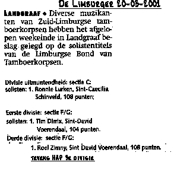
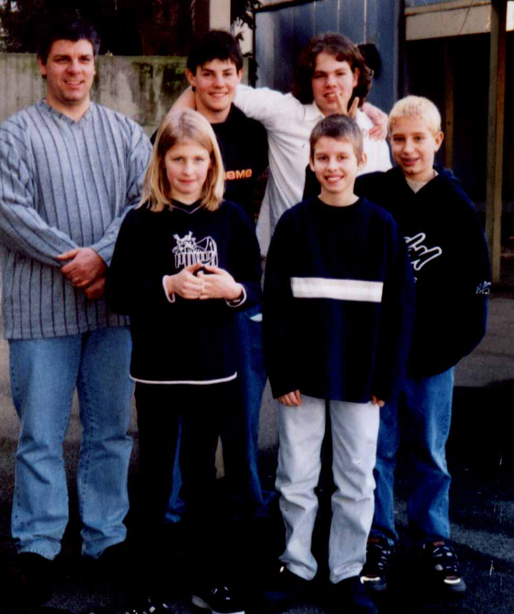
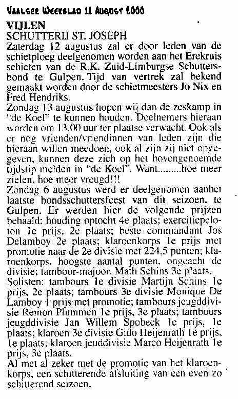
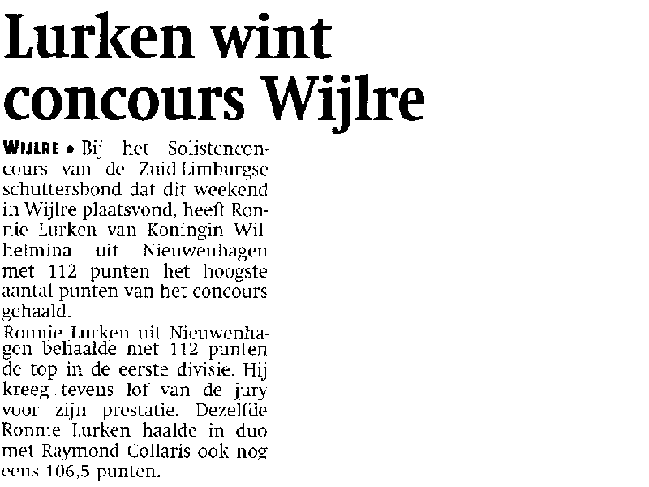

My students
Erfolge der Schüler
Three decades of Wettbewerb results: Limburg und Dutch national champions, prize-winners at Jugend Musiziert, und Solisten und ensembles honoured in Niederlande, Deutschland, Belgien und France.
Wettbewerb systems
How contests are graded
Six levels
- Jugendstufe (up to 12 years)
- Dritte Stufe
- Zweite Stufe
- Erste Stufe
- Stufe „ausgezeichnet“
- Ehrenstufe
Age groups
- Altersgruppe 1a — up to 8 years
- Altersgruppe 1b — 8 to 10
- Altersgruppe 2 — 11 to 12
- Altersgruppe 3 — 13 to 14
- Altersgruppe 4 — 15 to 16
- Altersgruppe 5 — 17 to 18
- Altersgruppe 6 — 19 to 20
- Altersgruppe 7 — 20 to 28
Two age groups
- Altersgruppe 1 — up to 14 years
- Altersgruppe 2 — 14 to 19
Results
Year by year
Punkte are out of the maximum used at each Wettbewerb. “In Zusammenarbeit mit” indicates students who also received lessons from another teacher.
- 2026
Jugend Musiziert — Regionalwettbewerb, Aachen, 31. Januar · Drumset (pop)
- Felix (Altersgruppe 5) — 24/25 Punkte: 1. Preis und prize-Sieger, advanced to state Stufe
- Jonas (Altersgruppe 2) — 23/25 Punkte: 1. Preis und prize-Sieger
- Fynn (Altersgruppe 3) — 23/25 Punkte: 1. Preis und prize-Sieger, advanced to state Stufe
- Alex (Altersgruppe 2) — 20/25 Punkte: 2. Preis
Jugend Musiziert — Preisträgerkonzert, Aachen, 27. Februar
Invitation for Felix Labedzki: Drumset improvisation.
Jugend Musiziert — Landeswettbewerb, Dortmund, 21. März PDF
- Felix — 23/25 Punkte
- Jonas — 23/25 Punkte
- Fynn — 21/25 Punkte
Competition programmes 2026
Schüler Age group Programm Time category Dauer Eschweiler Jonas Lamm 2 Dance the Drums 1 (M. Mordant); Rocksolo 4 (H. Mennens); Welcome to the… (Guns N’ Roses) 6–10 min 10:20 Fynn Krahl 3 Fynn’s Favourite (M. Mordant); Funksolo 3 (H. Mennens); Numb (Linkin Park) 10–15 min 10:41 Felix Labedzki 5 Crazy Army (E. Lemley / S. Gadd); Dance the Drums 2 (M. Mordant); Feeling Good (Michael Bublé); Improvisation (F. Labedzki) 15–20 min 18:15 Gangelt Alexander Foti 2 Rocksolo 3 (H. Mennens); Dancing the Drums 3 (M. Mordant); Starlight (Muse) 6–10 min - 2025
Jugend Musiziert — Regionalwettbewerb, Jülich, 1. Februar · Mallets
- Jonas (Altersgruppe 1b) — 24/25 Punkte: 1. Preis und prize-Sieger
- Fynn (Altersgruppe 2) — 24/25 Punkte: 1. Preis und prize-Sieger, advanced to state Stufe
- Alex (Altersgruppe 1b) — 24/25 Punkte: 1. Preis und prize-Sieger
- Felix (Altersgruppe 4) — 24/25 Punkte: 1. Preis und prize-Sieger, advanced to state Stufe
- Burkhard (Altersgruppe 4) — 22/25 Punkte: 1. Preis
- Tobias (Altersgruppe 4) — 22/25 Punkte: 1. Preis
Jugend Musiziert — Preisträgerkonzert, Aachen, 21. Februar
- Jonas — Marimba: Miniature for Marimba (Michel Mordant)
- Felix — Drumset: New Era (Felix Labedzki)
Jugend Musiziert — Landeswettbewerb, Essen, 24. März PDF
- Fynn — 21/25 Punkte
- Felix — 21/25 Punkte
Competition programmes 2025
Schüler Age group Programm Time category Dauer (min) Eschweiler Jonas Lamm 1b Marimba: Eli Green’s Cakewalk (S. Koninsky); Glockenspiel: Menuet (J. S. Bach); Marimba: Miniature for Marimba (M. Mordant); Marimba: Pirates of the Caribbean (H. Zimmer) 6–10 min 7 19/30 Fynn Krahl 2 Kleine Trommel: Ranec (J. Zinzen); Drumset: Rocksolo 4 (H. Mennens); Set-up: Set-Up Solo 1 (M. Mordant); kleine Trommel: Try It (F. Rademakers) 6–10 min 7 1/6 Burkhard Vogt 4 Marimba: Solo 3 (R. Wiener); Vibraphon: Für Elise (L. van Beethoven); Marimba: Triad Dimension (M. Mordant); Marimba: Alla Turca (W. A. Mozart) 15–20 min 12 3/4 Felix Labedzki 4 Drumset: Signature (S. Fink); Set-up: Jeroen (F. Rademakers); kleine Trommel: Back in Town (M. Mordant); Drumset: New Era — improvisation 15–20 min 15 11/12 Tobias Frank 4 Marimba: Marimba Piece 1 (R. Wiener); Marimba: Yellow After the Rain (M. Peters); Vibraphon: Diphtongue (M. Mordant); Marimba: Furioso and Waltz (E. Hatch) 15–20 min 16 2/5 Gangelt Alexander Foti 1b Xylophon: Ententanz (N. J. Živković); Glockenspiel: Double Up (M. Mordant); Xylophon: Minuet (Petzold); Xylophon: Cryptus (Mobers) 6–10 min - 2015
- Eschweiler “Best Of” Konzert — Programm (PDF)
- Niederländische Meisterschaften, 2. Division, Xylophon Sektion: Jeroen van der Poel
- 2014
- Jugend Musiziert — Regionalwettbewerb, Aachen, 25. Januar: David (Altersgruppe 2) — 24/25 Punkte, 1. Preis und prize-Sieger
- Jugend Musiziert — Landeswettbewerb, Essen, 14. März: David (Altersgruppe 2) — 21/25 Punkte PDF
- Mausbach: workshop “Trommelzeichen zu heutigen Noten” PDF
- Maasniel: workshops 1 und 2 PDF
- 2013
Sabbatical.
- 2012
- 2011
- World Music Wettbewerb (WMC), Solistenwettbewerb: Daan Westra und Jonas Germans PDF
- 2010
Limburgse Bond van Tamboerkorpsen — Limburger Meisterschaften, Roggel, 14. März PDF
- 1. Division, Schlagzeugduo: Martijn und Joost Schins (St. Joseph Vijlen) — Sticking 2-gether (M. Mordant), 90 Punkte Limburger Meister
- 1. Division, Marimba Solist: Stephan Geelen (Eendracht Dieteren) — Spanish Dance (K. Stensgaard), 89 Punkte Limburger Meister
- 2. Division, Xylophon/Marimba duo: Bianca und Joyce Berkers — Tango per due (I. Weijmans) Limburger Meister
Limburgse Bond van Tamboerkorpsen — Merkelbeek, 31. Januar PDF
- 1. Division, Schlagzeugduo: Martijn und Joost Schins (St. Joseph Vijlen) — Sticking 2-gether (M. Mordant), 93 Punkte Sieger 1. Division & Wettbewerbssieger
- Jugendstufe: Celine Dodemont, B-Bugle (Sektion B), in Zusammenarbeit mit Marco Gulpen Sieger Jugenddivision
- Jugendstufe: Jonas Germans, kleine Trommel, in Zusammenarbeit mit Schins Sieger Jugenddivision
Limburgse Bond van Tamboerkorpsen — Koningsbosch, 10. Januar
- 1. Division, Xylophon/Marimba Solist: Stephan Geelen (Drumband Fanfare Eendracht Dieteren) — Spanish Dance (Kai Stensgaard), 87 Punkte Sieger 1. Division
- 1. Division, Solist kleine Trommel: Stephan Geelen (Drumband Fanfare Eendracht Dieteren) — Back in Town (Michel Mordant), 87 Punkte Sieger 1. Division
- 2. Division, Xylophon/Marimba duo: Bianca und Joyce Berkers — Tango per due (I. Weijmans) Sieger Mallet-Duo
- 4. Division, Drumset: Niels Eberson — Drumsolo no. 1 (E. Lammers) Sieger Drumset-Solo
- 2009
Niederländische Meisterschaften, Elburg, 3. Oktober
- 2. Division, Xylophon/Marimba Solist: Joyce Berkers (Drumband Schutterij St. Stephanus Dieteren) Niederländischer Meister
- 2. Division, Xylophon/Marimba Solist: Bianca Berkers (Drumband Schutterij St. Stephanus Dieteren) — 2. Platz
- 2008
- Limburger Meisterschaften, Merkelbeek (16. März): Stephan Geelen (St. Stephanus Dieteren) — Marimba solo Furioso and Valse, 2. Stufe, 88 Punkte Limburger Meister
- Limburger Meisterschaften, Merkelbeek (16. März): Joost Schins (St. Joseph Vijlen) — 1. Division kleine Trommel, 93 Punkte, 2. Platz Video
- Maasbracht, 12. Januar: Stephan Geelen (Drumband Schutterij St. Stephanus Dieteren) — 2. Division Xylophon/Marimba Solist, 87 Punkte
- Heerlen, 21. Januar: Judith Keulers (Drumband Harmonie St. David Voerendaal) — 2. Division Xylophon/Marimba Solist, 85 Punkte Video
- Jugenddivision kleine Trommel: Niels Eberson und Jeroen van Buggenum (Drumband Fanfare Eendracht Dieteren) — 81 Punkte
- 2007
Niederländische Meisterschaften, Elburg, 13. Oktober
- Lars Bogie — kleine Trommel, 4. Stufe (in Zusammenarbeit mit Henry Geelen) Niederländischer Meister
- Bianca und Joyce Berkers — kleine Trommel, Jugendstufe (in Zusammenarbeit mit Henry Geelen) Niederländischer Meister
- Stephan Geelen und Jeroen Janssen — Duo kleine Trommel, 3. Stufe (in Zusammenarbeit mit Henry Geelen) Niederländischer Meister
- Joost Schins — kleine Trommel, 2. Stufe; Wettbewerbsstück Sagitta (M. Mols) Niederländischer Meister
O.L.S. Nederweert — Solistenwettbewerb, Ehrendivision Schlagzeug
- 1. J. Schins (Sint Joseph Vijlen) — 90,00 Punkte
- 2. M. Schins (Sint Joseph Vijlen) — 85,00 Punkte
Limburger Meisterschaften, Melick, 17.–18. März
- Martijn und Joost Schins (Vijlen) — Duo kleine Trommel Dialogo (H. Schellekens), 1. Stufe, 87 Punkte Limburger Meister
- Joost Schins (Vijlen) — Solo kleine Trommel Sagitta (M. Mols), 2. Stufe, 90,5 Punkte Limburger Meister
- Lars Bogie (St. Stephanus Dieteren) — Solo kleine Trommel Expo (J. Stoffels), 4. Stufe, 87 Punkte Limburger Meister
- Kevin Louvenberg (St. Stephanus Dieteren) — Solo kleine Trommel First Concert (F. Rademakers), 5. Stufe, 87,5 Punkte Limburger Meister
- Bianca und Joyce Berkers (St. Stephanus Dieteren) — Duo kleine Trommel Marche and Dance (G. Bomhof), 5. Stufe, 90 Punkte Limburger Meister
- Jugenddivision Duo kleine Trommel: Joyce und Bianca Berkers (Drumband Schutterij St. Stephanus Dieteren) — 86 Punkte
- 5. Division Solist kleine Trommel: Kevin Louvenberg (St. Stephanus Dieteren) — 87,5 Punkte, Limburger Meister 2007
- 5. Division Solist kleine Trommel: Melvin Schulpen (Drumband Schutterij St. Stephanus Dieteren) — 87 Punkte
- 5. Division Xylophon/Marimba Solist: Eefje Claessen (Drumband Fanfare Eendracht Dieteren) — 87 Punkte
- 4. Division Solist kleine Trommel: Joyce Berkers (Drumband Schutterij St. Stephanus Dieteren) — 86 Punkte
- 3. Division Duo kleine Trommel: Stephan Geelen und Jeroen Janssen (Drumband Schutterij St. Stephanus Dieteren) — 90 Punkte
For the best results, students should also receive extra lessons from a senior percussionist; for St. Stephanus Dieteren this is Henry Geelen.
Heerlen
- 4. Division Xylophon/Marimba Solist: Judith Keulers (Drumband Harmonie St. David Voerendaal) — 83 Punkte
- 3. Division Multipercussion Solist: Jasper Vliex (Drumband Harmonie St. David Voerendaal) — 85 Punkte
- 2. Division Solist kleine Trommel: Joost Schins (Schutterij St. Joseph Vijlen) — 88 Punkte
- 1. Division Duo kleine Trommel: Martijn und Joost Schins (Schutterij St. Joseph Vijlen) — 87 Punkte
- 2006
- Niederländische Meisterschaften, Berlicum, 2. Juni: Kevin Louvenberg — kleine Trommel, Jugendstufe; Wettbewerbsstück Basic Game (L. Camp) Niederländischer Meister
- O.L.S. Stramproy, 3. Juli: Joost Schins — 26 Rudimental Solo (H. van Boven), Ehrenstufe, 90,5 Punkte
- Limburger Meisterschaften, Kerkrade, 19. März: Judith Keulers — Marimba, Polka en Galopp (I. Weijmans), 5. Stufe, 91 Punkte Limburger Meister
- Limburger Meisterschaften, Kerkrade, 19. März: Stephan Geelen — Marimba, Polka en Galopp (I. Weijmans), 4. Stufe, 88 Punkte Limburger Meister
- Limburger Meisterschaften, Kerkrade, 19. März: Martijn Schins — kleine Trommel, Sagitta (M. Mols), 2. Stufe, 89 Punkte — 2. Platz of Limburg
- Limburgse Bond van Tamboerkorpsen, Heerlen, 22. Januar: Luc Pieters — Marimba, Starting Up (M. Mordant), Jugendstufe, 83 Punkte
- Limburgse Bond van Tamboerkorpsen, Heerlen, 22. Januar: Judith Keulers — Marimba, Polka en Galopp (I. Weijmans), 5. Stufe, 87 Punkte DOC
- 2005
- Houthem, 21. August: Joost Schins — Golden Tricks (J. Schipper), Ehrenstufe, 86,90 Punkte, 2. Platz
- Houthem, 21. August: Martijn Schins — Expression (C. Bertjens), Ehrenstufe, 87,10 Punkte
- Federatiefeest Born, 17. Juni: Joost Schins — Golden Tricks (J. Schipper), Ehrenstufe, 53,5 Punkte
- Federatiefeest Born, 17. Juni: Martijn Schins — Expression (C. Bertjens), Ehrenstufe, 53 Punkte
- Zuidlimburgse Schuttersbond, Nieuwenhagen, 28. März: Joost und Martijn Schins — Timing (Henk Smit), Ehrenstufe, 176 Punkte Wettbewerbssieger
- Zuidlimburgse Schuttersbond, Nieuwenhagen, 28. März: Joost Schins — Golden Tricks (J. Schipper), Ehrenstufe, 175,5 Punkte Wettbewerbssieger Solisten
- Zuidlimburgse Schuttersbond, Nieuwenhagen, 28. März: Martijn Schins — Expression (C. Bertjens), Ehrenstufe, 172,5 Punkte — 2. Platz Solist
- Limburger Meisterschaften, Grubbenvorst, 20. März: Timo Coutura — Marimba, Yellow After the Rain (M. Peters), 2. Division Sektion F/G Limburger Meister
- Limburgse Bond van Tamboerkorpsen, Noorbeek, 1. Februar: Roel Zimny — Marimba, Furioso and Valse in D minor (E. Hatch) — Sieger 2. Division Sektion F/G
- Limburgse Bond van Tamboerkorpsen, Noorbeek, 1. Februar: Timo Coutura — Marimba, Yellow After the Rain (M. Peters), 2. Division Sektion F/G — 2. Platz
- OSC Baexem: Dion Lamkin — Marimba, Starting Up (M. Mordant), 3. Stufe, 82 Punkte
- 2004
- Zuidlimburgse Schuttersbond, Simpelveld, 28. März: Joost Schins — Blue Ribbon (H. Borrenberghs), Ehrenstufe, 108 Punkte Wettbewerbssieger
- Zuidlimburgse Schuttersbond, Simpelveld, 28. März: Joost und Martijn Schins — Dialogo (H. Schellekens), Ehrenstufe, 106 Punkte Wettbewerbssieger Ensembles
- Zuidlimburgse Schuttersbond, Simpelveld, 30. März: Martijn Schins — 26 Rudimental Solo (H. van Boven), Ehrenstufe, 105 Punkte — 3. Platz of the Wettbewerb
- Limburger Meisterschaften, Heel, 14. März: Jasper Vliex — Xylophon, Yankee Land (M. Hoffman), 2. Stufe Sektion F/G Limburger Meister
- Limburgse Bond van Tamboerkorpsen, Heerlen, 1. Februar: Tim Dirrix — Marimba, Rosewood Blues (C. Delancy), Ehrenstufe Sektion F/G
- Limburgse Bond van Tamboerkorpsen, Heerlen, 1. Februar: Judith Keulers — Wals in C (L. Claasen), Jugendstufe Sektion F/G
- 2003
- O.L.S. Kessenich (Belgien), 6. Juli: Martijn Schins — Golden Tricks (J. Schipper), Ehrenstufe, 52,5 Punkte
- Zuidlimburgse Schuttersbond, Voerendaal, 30. März: Martijn Schins — Golden Tricks (J. Schipper), Ehrenstufe, 110 Punkte Wettbewerbssieger
- Zuidlimburgse Schuttersbond, Voerendaal, 30. März: Joost Schins — Back in Town (M. Mordant), Ehrenstufe, 108,5 Punkte — 3. Platz of the Wettbewerb
- Solistenwettbewerb (Z.L.S.F.), Voerendaal, 30. März: Martijn und Joost Schins und Tim Kusters — Striking Back (M. Mordant), erste Stufe, 109 Punkte — 2. Platz of the Wettbewerb
- Limburger Meisterschaften, Borgharen, 13. März: Jasper Vliex — Xylophon, Polka en Galop (I. Weijmans), 3. Stufe Sektion F/G Limburger Meister
- 2002
- Zuidlimburgse Schuttersbond, Eys, 9. Juni: Martijn Schins — kleine Trommel, Compilation March (G. Bomhof) und Expression (C. Bertjens), Ehrenstufe
- Zuidlimburgse Schuttersbond, Eys, 9. Juni: Remon Plummen — kleine Trommel, Three Dances (L. Camp), zweite Stufe
- Niederländische Meisterschaften, Berlicum, 2. Juni: Armand van Loo — Xylophon, 3. Stufe Sektion F/G; Wettbewerbsstück Mars en Wals (I. Weijmans) Niederländischer Meister
- Solistenwettbewerb (Z.L.S.F.), Ubachsberg, 4. April: Petra, Martijn und Joost Schins und Tim Kusters — Back to the Roots (M. Mordant), erste Stufe, 104 von 120 Punkte
- Limburger Meisterschaften, Melick, 13. März: Armand van Loo — Xylophon, 3. Stufe Sektion F/G; Wettbewerbsstück Wals in C (L. Claesen) Limburger Meister
- L.B.T., Heerlen, 3. Februar: Armand van Loo — Xylophon, Wals in C (L. Claesen), 3. Stufe Sektion F/G
- L.B.T., Roggel, 19. Januar: Ralf Linssen — kleine Trommel, My First Audition (M. Mordant), Jugendstufe Sektion A, 52 Punkte
- 2001
- Maria Habes Solistenwettbewerb (O.S.C.), Heel, 4. November: Tymen Abels — Marimba, Solo Piece for Anaïs (Ruud Wiener), dritte Stufe
- Maria Habes Solistenwettbewerb (O.S.C.), Heel, 4. November: Ayrton Spierts — kleine Trommel, Repetition March (Henk Mennens), Jugendstufe
- Mons. Roncken Toernooi, Amstenrade, 23. September: Tijmen Abels — Xylophon, 3. Stufe
- Zuidlimburgse Schuttersbond, Wijlre, 19. August: Joost Schins (kleine Trommel, erste Stufe), Tim Kusters (kleine Trommel, Ehrenstufe), Gido Heijenrath (B-Bugle, dritte Stufe), Monique Delamboy (kleine Trommel, zweite Stufe)
- Zuidlimburgse Schuttersbond, St. Geertruid, 17. Juni: Martijn Schins (kleine Trommel, erste Stufe), Tim Kusters (kleine Trommel, Ehrenstufe), Gido Heijenrath (B-Bugle, dritte Stufe), Remon Plummen (kleine Trommel, dritte Stufe), Joost Schins (kleine Trommel, erste Stufe)
- Kantonale Bond van Schutterijen “Eendracht Maakt Macht”, Buggenum: Ralf Naus — kleine Trommel, Jugendstufe
- Kantonale Bond van Schutterijen “Eendracht Maakt Macht”, Roggel, 17. Juni: Ralf Linssen — kleine Trommel, Jugendstufe
- O.S.C., St. Odiliënberg, 10. Juni: duo Juul Beckers und Timmy Coenen — Schlagzeug, Jugendstufe, Exposition for Schlagzeugduo (M. Mordant)
- Mons. Roncken Toernooi, Melick, 20. Mai: Tijmen Abels — Xylophon, 3. Stufe
- Niederländische Meisterschaften, Berlicum, 13. Mai: Tim Dirrix — Marimba, Stufe „ausgezeichnet“ Sektion F/G; Wettbewerbsstück Yellow After the Rain (M. Peters) Niederländischer Meister
- Niederländische Meisterschaften, Berlicum, 13. Mai: Roel Zimny — Xylophon, dritte Stufe Sektion F/G; Wettbewerbsstück Yankee Land (M. Hoffman) Niederländischer Meister
- Zuidlimburgse Schuttersbond, Mechelen, 8. April: Ron Lurken — kleine Trommel, Ehrenstufe; Wettbewerbsstück Back in Town (M. Mordant) Wettbewerbssieger
- Zuidlimburgse Schuttersbond, Mechelen, 8. April: Joost Schins (kleine Trommel, erste Stufe), Gido Heyenrath (B-Bugle, zweite Stufe), Remon Plummen (kleine Trommel, zweite Stufe), Armand van Loo (kleine Trommel, dritte Stufe)
- 10th O.S.C., Baexem, 25. März: Paul Venner — Konzert-Toms, dritte Stufe
- Limburgse Bond van Tamboerkorpsen, Landgraaf, 18. März: Tim Dirrix — Marimba, Stufe „ausgezeichnet“ Sektion F/G Limburger Meister
- Limburgse Bond van Tamboerkorpsen, Landgraaf, 18. März: Ron Lurken — kleine Trommel, Stufe „ausgezeichnet“ Sektion C Limburger Meister
- Limburgse Bond van Tamboerkorpsen, Landgraaf, 18. März: Roel Zimny — Xylophon, dritte Stufe Sektion F/G Limburger Meister
- Limburgse Bond van Tamboerkorpsen, Heerlen, 11. Februar: Tim Dirrix (Marimba, Stufe „ausgezeichnet“ F/G), Ron Lurken (kleine Trommel, Stufe „ausgezeichnet“ C), Roel Zimny (Xylophon, dritte Stufe F/G)
- Jugend Musiziert, Düren (Deutschland), 28. Januar: Timo Coutura (Altersgruppe 4), Daniel Kupper (Altersgruppe 3), Stefan Hagel und Linda Mertes (Altersgruppe 2) — Marimba, Pauken, kleine Trommel und Drumset; Stefan played a Paukensolo by J. McKenzie
- Gido und Marco Heijenrath
- Konzert “Het Land van Ooit”, Drunen: Rafael Sars — kleine Trommel, in the record attempt “The Biggest Symphony Orchestra ‘Ooit’”, conductor Henk Westbroek
- 2000
- Schuttersfeest Gulpen, 6. August: Monique Delamboy (kleine Trommel, dritte Stufe, aufgestiegen in die zweite Stufe), Gido Heijenrath (B-Bugle, dritte Stufe), Jan Willem Spobeck (kleine Trommel, Jugendstufe)
- Federatiefeest Klimmen, 23. Juni: Martijn Schins (kleine Trommel, erste Stufe), Ronny Lurken (kleine Trommel, Ehrenstufe), Remon Plummen (kleine Trommel, Jugendstufe)
- Oud Limburgs Schuttersfeest, Baarlo: Martijn Schins (kleine Trommel, erste Stufe), Ronny Lurken (kleine Trommel, Ehrenstufe)
- Zuidlimburgse Schuttersbond, Nieuwenhagen, 18. Juni: Marco Heijenrath (B-Bugle, Jugendstufe), Gido Heijenrath (B-Bugle, dritte Stufe)
- Zuidlimburgse Schuttersbond, Ubachsberg, 21. Mai: Monique Delamboy (kleine Trommel, dritte Stufe), Armand van Loo (kleine Trommel, Jugendstufe), Marco Heijenrath (B-Bugle, Jugendstufe), Gido Heijenrath (B-Bugle, dritte Stufe)
- Ondeling Solisten Concours, St. Odiliënberg, 2. April: Kenneth Savelkoul — Xylophon, dritte Stufe
- Zuidlimburgse Schuttersbond, Mheer, 26. März: Joost Schins (kleine Trommel, dritte Stufe), Gido Heijenrath (B-Bugle, dritte Stufe), Remon Plummen (kleine Trommel, Jugendstufe)
- Limburgse Bond van Tamboerkorpsen, Landgraaf, 13. Februar: Tim Dirrix — Xylophon, erste Stufe Sektion F/G
- Limburgse Bond van Tamboerkorpsen, Melick, 31. Januar: Michel Thomassen — kleine Trommel, Jugendstufe Sektion C
- 1999
- Ronnie Lurken — kleine Trommel: Zuidlimburgse Schuttersbond Meerssen (22. August, erste Stufe), Houthem (8. August, erste Stufe), Z.L.S.F. Susteren (18. Juli, erste Stufe), O.L.S. Reuver (4. Juli, zweite Stufe), Wijlre (20. Juni, erste Stufe), Schin op Geul (30. Mai, erste Stufe), Valkenburg (28. März, Ehrenstufe)
- O.S.C. Heel, 25. April: Tymen Abels — Xylophon, Jugendstufe
- O.S.C. Baexem, 28. März: Ruud Joris — Xylophon, erste Stufe
- Limburgse Bond van Tamboerkorpsen, Roggel, 21. März: Tim Dirrix — Xylophon, zweite Stufe Sektion F/G Limburger Meister
- Limburgse Bond van Tamboerkorpsen, Roggel, 21. März: Ronnie Lurken und Raymond Collaris — Ensemble kleine Trommel, Stufe „ausgezeichnet“ Sektion C Limburger Meister
- Limburgse Bond van Tamboerkorpsen, Heerlen, 31. Januar: Ronnie Lurken und Raymond Collaris (Ensemble kleine Trommel, Ehrenstufe Sektion C); Tim Dirrix (Xylophon, zweite Stufe Sektion F/G)
- 1998
- Zuid Limburgs Federatiefeest, Valkenburg, 19. Juli: Ronnie Lurken — kleine Trommel, erste Stufe
- Oud Limburgs Schuttersfeest, Kinrooi (Belgien), 5. Juli: Ronnie Lurken — kleine Trommel, erste Stufe
- S.E.C. Posterholt, 19. April: Rik van Bree — kleine Trommel, Jugendstufe
- Zuidlimburgse Schuttersbond, Wijlre, 29. März: Ronnie Lurken — kleine Trommel, erste Stufe. This Wettbewerb has been won four times by former students (1992, 1993, 1995 und 1996).
- Limburgse Bond van Tamboerkorpsen, St. Geertruid, 21. März: Tim Dirrix — Xylophon, Polka en Galop (I. Weijmans), dritte Stufe Sektion F/G Limburger Meister
- Jugend Musiziert, Düren (Deutschland), 25. Januar: Timo Coutura (Altersgruppe 3) und Lucas Stolberg (Altersgruppe 2) — Xylophon, Pauken, kleine Trommel und Drumset
- Limburgse Bond van Tamboerkorpsen, Heerlen, 18. Januar: Tim Dirrix — Xylophon, Polka en Galop (I. Weijmans), dritte Stufe
- 1993to 1997
- Oud Limburgs Schuttersfeest, Kaulille (Belgien), 6. Juli 1997: Ronnie Lurken — kleine Trommel
- Vriendenkrans, Heel, 13. April 1997: Onno van de Ven — Marimba, Cool Bite (W. Stadler), duet mit Richard Steinbusch (Vibraphon)
- O.S.C. Merkelbeek, 1. April 1996: Geert Gebben — kleine Trommel, Jugendstufe
- S.E.C. Posterholt, 24. März 1996: Pierke Boosten — kleine Trommel, Jugendstufe
- O.S.C. Doenrade, 2. April 1995: Stevie Gelissen (kleine Trommel, zweite Stufe) und Joep Larue (kleine Trommel, Jugendstufe)
- Limburgse Bond van Tamboerkorpsen, Sittard, 14. März 1993: Linda, Angelique und Carol Gubbels — kleine Trommel, dritte Stufe Sektion C
- Limburgse Bond van Tamboerkorpsen, Epen: Sanne Teheux — B-Bugle, Jugendstufe Sektion B Limburger Meister
Archive
Press clippings und documents
Newspaper articles, certificates und Wettbewerb documents from the students’ archive.
 Press clipping, 20. August 2001
Press clipping, 20. August 2001
 Press clipping, 8. April 2001
Press clipping, 8. April 2001


Press clipping, 20. März 2001

Jugend Musiziert 2001 Stefan Hagel
Stefan Hagel
 Marco und Gido Heijenrath
Marco und Gido Heijenrath


Vaalser Weekblad, 11. August 2000 Press clipping, 24. Juli 2000
Press clipping, 24. Juli 2000
 De Limburger und Vaalser Weekblad, 10. Juli 2000
De Limburger und Vaalser Weekblad, 10. Juli 2000
 De Limburger und Vaalser Weekblad, 25. Mai 2000
De Limburger und Vaalser Weekblad, 25. Mai 2000
 Press clipping, 27. März 2000
Press clipping, 27. März 2000
 Press clipping, 22. März 1999
Press clipping, 22. März 1999


Press clipping, 29. März 1998 Press clipping, 28. Februar 1997
Press clipping, 28. Februar 1997
 Joost Schins, 2004
Joost Schins, 2004